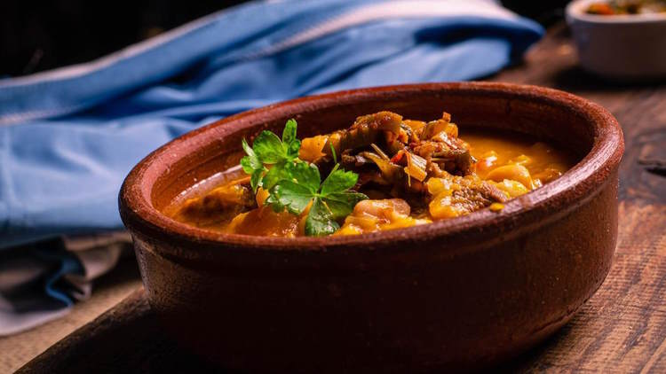

Receta de Locro criollo

Lista de ingredientes
- maiz blanco
- calabaza
- choclo
- porotos alubia
- patas de cerdo
- panceta
- chorizo colorado
- pechito de cerdo
- falda
- grasa
- cebolla de verdeo
- condimentos: sal, ají molido, comino, pimentón picante
Preparación
- Hidrate el maíz y el poroto durante 12 horas
- Pele la calabaza y ralle junto con el choclo
- Corte la patas de chancho por la mitad y condimente con sal.
- Corte la panceta, el chorizo colorado, la falda y el pechito de cerdo en trozos.
- Coloque en una olla la grasa y lleve a fuego. Una vez caliente añada las patas de chancho junto con la panceta,
el pechito de cerdo y la falda. Una vez doradas las carnes añada el maíz y los porotos junto con el agua donde los
hidrato, la calabaza rallada, el choclo rallado y el caldo de carne caliente. Condimente con sal gruesa. Cocine
durante 2 horas aproximadamente.
- Media hora antes de terminar la cocción agregue el chorizo colorado
Salsa
- Pique la cebolla de verdeo.
- Caliente una sartén con la grasa, saltee la cebolla de verdeo y condimente con ají molido, el pimentón picante,
el comino y la sal, mezcle y añada dos cucharadas de agua fría.
Presentación
- Sirva el locro en cazuelas y acompañe con la salsa.
Ver video de la preparación!!!
Leer esta receta en El Gourmet
Leer receta de Pastelitos de Membrillo en La Salteña
Ir al inicio